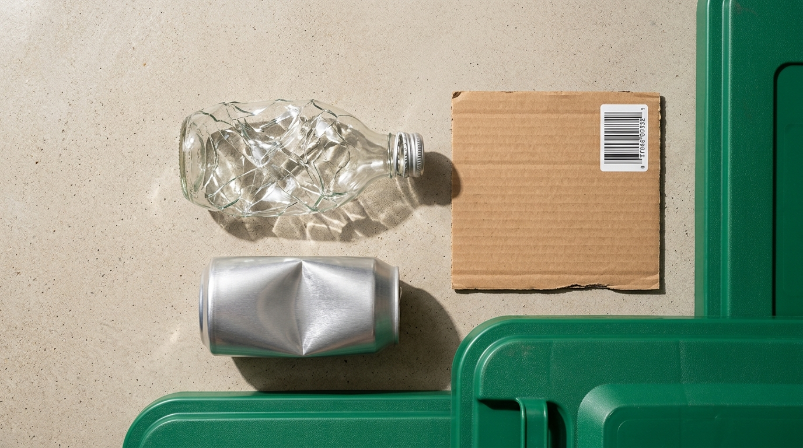

Stop wish-cycling at the curb. Verify what actually survives the optical sorter.
Crossing the city limit between Sugar Land (Republic Services and the Fort Bend County Recycling Center on Blume Rd) and Houston (SWMD and Westpark) changes which plastics, yard bags, and foam blocks are accepted. Inspect any product by GS1 barcode, SPI polymer stamp, or physical contamination state before it jams a star-screen shaft.
- Verified TX Barcodes
- 28 GS1 UPCs
- Polymer Mold Codes
- #1 - #7 SPI
- Material Profiles
- 17 Streams
- Ordinance Jurisdictions
- 2 Cities

SPI Plastic Resin Identification Code (#1 to #7)
Household Cart Contamination Simulator
Test a multi-item bin load to see whether MRF optical sorters and star-screens accept the cart or flag a load-ruining tangler or battery hazard.
Sugar Land vs. Houston 1-Page Kitchen & Garage Sorting Guide
| Household Item / Material | City of Sugar Land, TX (Republic Services) | City of Houston, TX (SWMD) | MRF Sorting Physics & Preparation Rule |
|---|---|---|---|
| #1 PET & #2 HDPE Bottles/Jugs | Recycle in Curbside Cart | Recycle in Green Cart | Empty all liquid so optical NIR air jets can eject containers accurately; keep loose. |
| #5 Polypropylene (PP) Tubs | Recycle in Curbside Cart (Clean) | Recycle in Green Cart (Clean) | Rinse dairy/food residue; discard foil peel lids in trash. |
| Clean Glass Bottles & Jars | Accepted in Curbside Cart | Accepted in Green Cart & Depositories | Remove metal caps (recycle separately). Never include broken glass, ceramics, or Pyrex. |
| Greasy Pizza Boxes | Tear Clean Lid for Cart / Trash Bottom | Tear Clean Lid for Cart / Trash Bottom | Pizza oil permanently weakens wet paper pulp; always tear off clean cardboard lids. |
| Plastic Grocery Bags (#4 Film) | Never in Cart (Retail Store Drop-Off) | Never in Cart (Retail Store Drop-Off) | #1 MRF shaft tangler. Return clean dry film to H-E-B, Kroger, or Target store kiosks. |
| #6 Polystyrene / Styrofoam | Clean Foam to Fort Bend Drop-Off; Food Foam in Trash | Black Garbage Cart Only | Fort Bend County Recycling Center (1200 Blume Rd) densifies clean #6 foam; never place in carts. |
| Yard Trimmings & Brush | Kraft Paper Bags / Cans (40 lb limit) | City-Logo Compostable Bags Only (50 lb limit) | Houston requires bags stamped with the official City biodegradable logo. |
| Lithium & Household Batteries | Fort Bend County HHW Drop-Off Only | Houston Westpark / North ESC BOPA Only | Compaction punctures lithium cells, sparking MRF truck and facility fires. Tape terminals. |